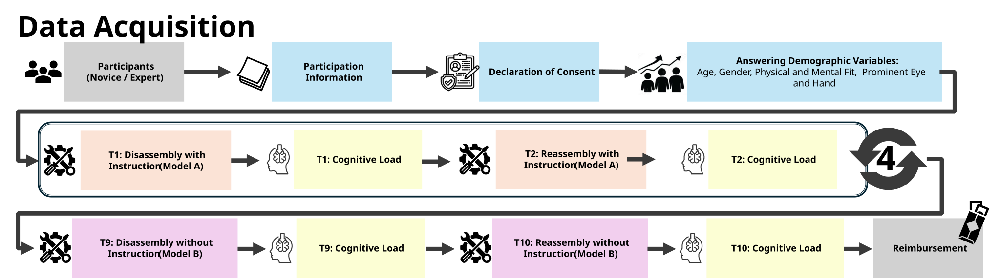
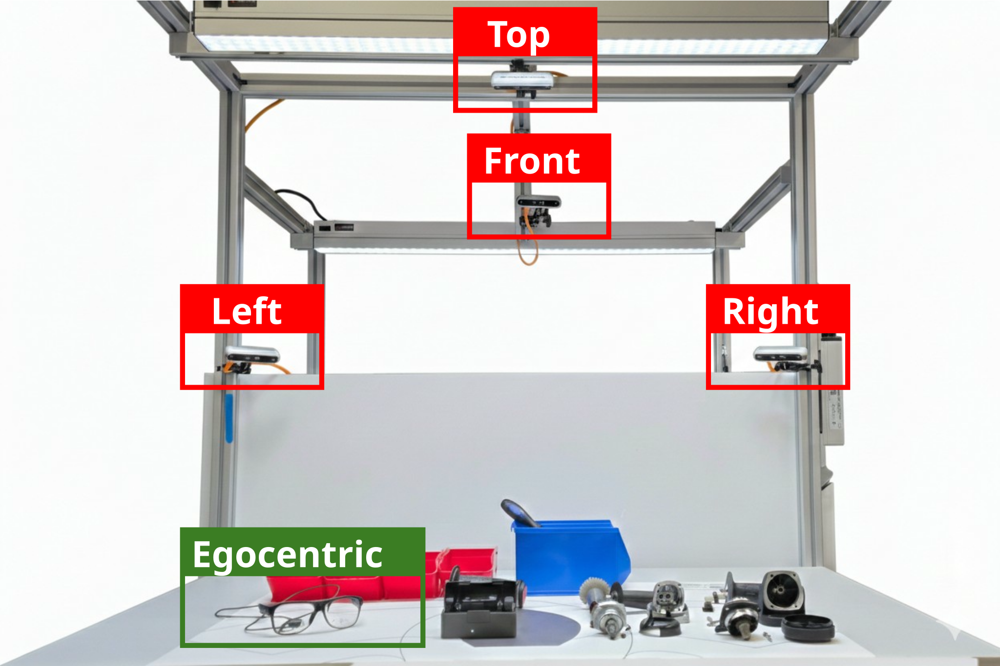
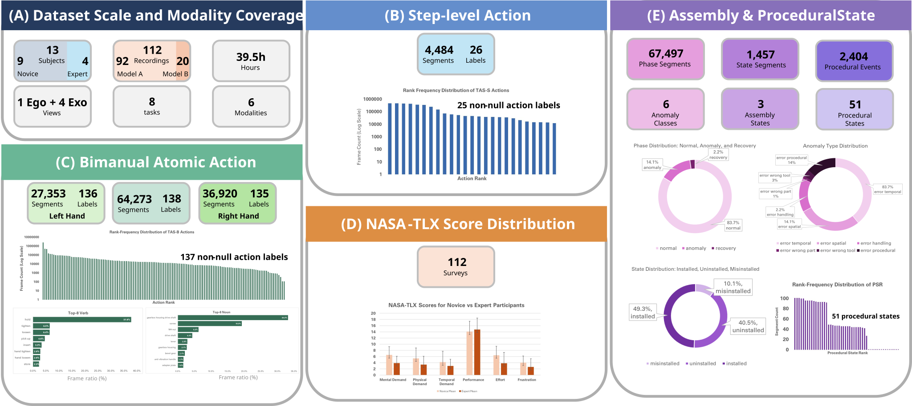
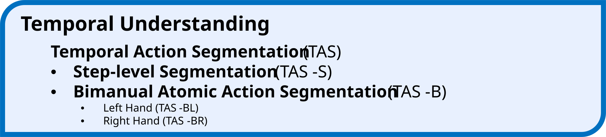
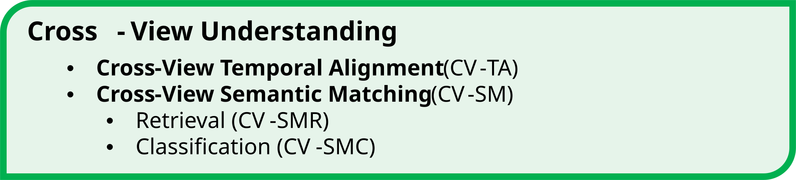
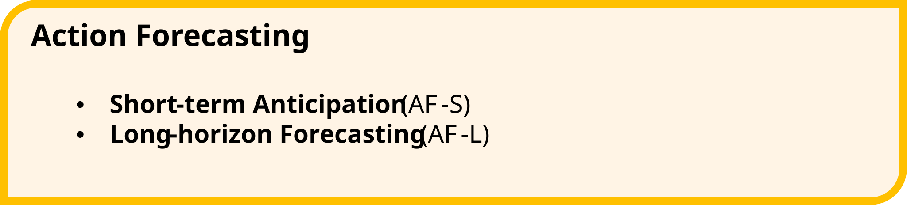
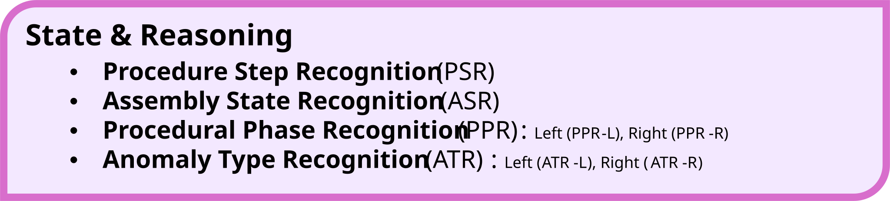
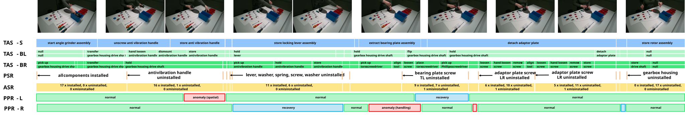
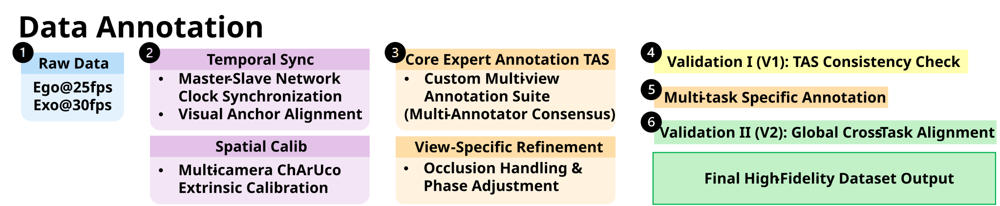

ACM MM 2026 · dataset and benchmark
IMPACT: A Multi-view Industrial Assembly Benchmark
for Fine-grained Action Understanding, Procedural Reasoning, and Error Analysis
A synchronized five-view RGB-D dataset and benchmark for industrial assembly under viewpoint shift, partial observability, multi-route execution, and anomaly recovery.
Dataset Video Modalities
MP4 placeholder
Annotation Visualization
MP4 placeholder
Assembly Task and Recording Setup
IMPACT is collected around real angle grinder assembly and disassembly with synchronized ego and exo RGB-D, gaze, audio, and cognitive metadata.




Dataset Overview
IMPACT comprises 112 trials from 13 participants and 39.5 hours of synchronized industrial assembly data.

Two physical product configurations
Two angle grinder configurations provide a natural cross-configuration generalization setting.
Partial-order procedural execution
Valid trajectories follow a prerequisite graph rather than a single rigid sequence.
Anomaly and compliance supervision
Explicit anomaly recovery supervision is paired with compliance phases and a six-category anomaly taxonomy.
Trial-level cognitive workload
Each trial is paired with NASA-TLX workload measurement.
Benchmark Tasks
IMPACT is organized into four benchmark families, all defined on the same synchronized recordings.
Temporal Understanding
- Temporal Action Segmentation at Step Level (
TAS-S) - Bimanual Atomic Segmentation for Left and Right Hand (
TAS-BL/BR)
Cross-View Understanding
- Cross-View Temporal Alignment (
CV-TA) - Cross-View Semantic Matching via Retrieval and Classification (
CV-SMR,CV-SMC)
Action Forecasting
- Short-term Anticipation (
AF-S) - Long-horizon Forecasting (
AF-L)
State & Reasoning
- Procedure Step Recognition (
PSR) - Assembly State Recognition (
ASR) - Procedural Phase Recognition for Left and Right Hand (
PPR-L/R) - Anomaly Type Recognition for Left and Right Hand (
ATR-L/R)




Download
The release is split across the repository and Google Drive bundles, covering benchmark code, protocol assets, media, and supporting artifacts.
| Type | Status | Content |
|---|---|---|
| Protocol Assets | Released | Official splits, mappings, labels, and procedure metadata. |
| Starter Code | Released | Task wrappers, evaluation scripts, and released baselines. |
| Mini Sample Pack | Planned | Lightweight subset for quick-start demos. |
| Primary Distribution | Google Drive | Official release folder for media, features, checkpoints, and supplementary bundles. |
| Raw Media | Google Drive | Full RGB-D media bundles distributed alongside the release. |
| Pre-extracted Features | Google Drive | Feature packs for supported backbones distributed alongside the release. |
| Checkpoints | Google Drive | Pretrained checkpoints and supplementary release bundles. |
| Hugging Face Mirror | Planned | Mirror repository reserved for a later update. |
Release Update
Planned dataset maintenance updates will be announced here.
Planned · Late Jun 2026
Annotation Version Update
A refined annotation release is planned for late June 2026. The update will reduce residual annotation noise, improve label accuracy, and include a detailed changelog documenting version differences and corrections. The current public release corresponds to Annotation v1 for academic release and early use; the upcoming release will publish denoised annotations.
Annotation Schema
Aligned supervision spans interaction dynamics, procedural structure, compliance, and state evolution.


Fine-grained actions
Hand-specific labels capture coordinated bimanual interaction.
Procedural structure
Coarse steps and completion events connect segmentation to graph-based reasoning.
Assembly states
Component-wise ternary states support direct ASR and indirect PSR.
Compliance and anomalies
Compliance phases are paired with anomaly categories for diagnosis.
Benchmark
Released methods are organized by task family, with detailed protocols maintained in the task-specific pages.
Released coverage
TAS,CV-TA,CV-SM,AF-S,PSR,ASR,PPR, andATRare released.AF-Lis reserved in the release structure and documented for a later release.- Detailed model lists and launch commands are maintained in the repository.
Metrics
- Dense prediction metrics for temporal and compliance tasks.
- Retrieval and classification metrics for cross-view tasks.
- Task-specific forecasting, state, and procedural reasoning metrics.
Leaderboard
Leaderboard links and submission policy will be added when the public benchmark release is finalized.
Resources
The repository is the operational layer for reproducible benchmarking and protocol inspection.
Paper, Citation, and License
These items are visible early because they matter to both users and reviewers.
Paper & Citation
Paper PDF and citation links will be added here when the public release is finalized.
@inproceedings{impact2026,
title = {IMPACT: A Dataset for Multi-Granularity Human Procedural Action Understanding in Industrial Assembly},
author = {TBD},
booktitle = {ACM Multimedia},
year = {2026}
}License
- Repository-authored code: repository root
LICENSE. - Dataset assets and documentation:
LICENSE-DATA. third_party/: per-directory provenance and license notices.
Acknowledgements
We gratefully acknowledge Lei Qi, Weitong Kong, Chen Zhang, Haiwen Sun, and Yuwei Hu for their valuable support throughout the data collection and annotation process for IMPACT.